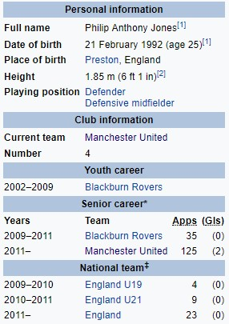

Фил Џонс
Филип Антони Џонс(рођен 21. фебруара 1992.) је енглески професионални фудбалер који игра за клуб Манчестер Јунајтед и репрезентацију Енглеске. Пре него што се придружио Манчестер Јунајтеду, Џонс је играо за Блекбурн Роверс на нивоу младих и виших. Иако је првенствено средишњи одбрамбени, он се такође користи као десни бек или одбрамбени везни играч. Џонс је представио Енглеску на разним нивоима и тренутно је члан сениорске репрезентације Енглеске. Играо је за екипу испод 19 у 2009, пре него што је дебитовао за екипу испод 21 године. Имао је свој деби за сениорску екипу Енглеске 7. октобра 2011. године.
